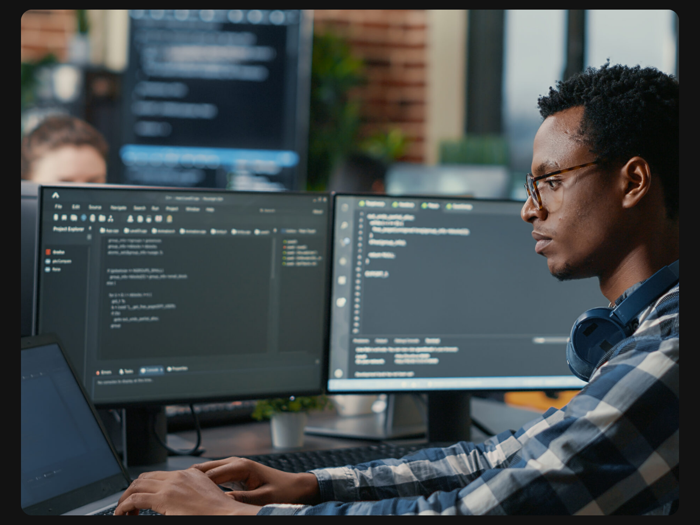

Curso Técnico de Desenvolvimento de Sistemas tem se destacado por unir teoria e prática de forma
com professores atualizados e uma abordagem que acelera a aprendizagem e prepara o aluno pro
mercado real.
Por
David Paiva
, Notícias Tech
18/05/2025 17h07 • Atualizado há pouco

Foto: DCStudio – Freepik
Vivemos em uma era em que a tecnologia avança numa velocidade quase alucinante, e dentro desse cenário,o curso técnico de Desenvolvimento de Sistemas (DS) surge como uma das formações mais relevantes e alinhadascom o futuro do mercado. Voltado para quem deseja ingressar no universo da programação, da lógica computacional e da criação de soluções digitais, o curso tem se mostrado uma verdadeira porta de entrada para carreiras sólidas e criativas no mundo da tecnologia.
Voltado para quem deseja ingressar no universo da programação, da lógica computacional e da criação de soluções digitais, o curso tem se mostrado uma verdadeira porta de entrada para carreiras sólidas e criativas no mundo da tecnologia. Não é exagero dizer que, hoje, saber programar é quase tão essencial quanto saber escrever — e o curso de DS entrega essa habilidade de forma prática, direta e extremamente aplicável.
A estrutura do curso foi pensada para oferecer um aprendizado rápido, mas sem perder a profundidade. Em pouco tempo, o aluno sai do zero e já começa a desenvolve seus próprios projetos, utilizando linguagens como Java, JavaScript, HTML, CSS e até explorando bancos de dados.
Essa velocidade na evolução é, sem dúvida, um dos grandes atrativos do curso. A sensação de criar algo do zero, ver um sistema funcionando, uma tela aparecendo no navegador, ou até mesmo um banco de dados se conectando de forma fluida, é impagável — e isso tudo pode acontecer já nos primeiros meses de aula.
Outro ponto que merece destaque é o comprometimento
dos professores. A maioria dos profissionais que atuam
no curso de DS tem grande vivência no mercado e não
se limitam a ensinar somente o conteúdo da apostila.
Eles trazem desafios reais, tendências da indústria,
frameworks modernos e boas práticas que fazem
total diferença na formação dos alunos.
É visível o esforço constante para atualizar os conteúdos, tornando as aulas dinâmicas, práticas e alinhadas com o que de fato se usa lá fora, nas empresas. Isso dá ao aluno uma vantagem enorme quando chega a hora de entrar no mercado de trabalho — e isso faz brilhar os olhos de quem realmente leva o curso a sério.
Mas, como todo curso técnico, há também aspectos que merecem uma atenção crítica. A carga horária intensa, às vezes atropela conteúdos que mereceriam mais tempo para maturação. É fácil se sentir perdido em meio a tantos códigos, termos técnicos e ferramentas novas.
Nem sempre os alunos conseguem acompanhar o ritmo, e isso pode gerar uma frustração inicial. Falta, em alguns momentos, um suporte mais estruturado para quem está começando totalmente do zero. O ideal seria um reforço extra nos fundamentos da lógica de programação, por exemplo, para garantir que ninguém fique pra trás.
Apesar disso, é impossível negar o quão gratificante é fazer parte desse curso. A cada projeto entregue, a cada erro corrigido, a cada linha de código que finalmente roda do jeito certo, o aluno sente que está realmente evoluindo — e não só como programador, mas como resolvedor de problemas, como alguém que pensa de forma lógica e criativa ao mesmo tempo.
O curso, mesmo com seus desafios, molda uma nova forma de pensar. Ele ensina a errar com inteligência, a testar hipóteses, a colaborar com colegas e, principalmente, a aprender de forma autônoma — uma habilidade que é ouro no mundo da tecnologia.
Pessoalmente, posso dizer que o curso de DS não só abriu portas, mas também expandiu horizontes. No começo, é tudo muito novo, muito técnico, mas aos poucos você percebe que está aprendendo mais do que código: está aprendendo a construir ideias, a transformar problemas em soluções palpáveis, a enxergar o mundo digital com outros olhos.
E mesmo com as falhas e as corridas contra o tempo para entregar os trabalhos, a sensação de estar em constante evolução compensa tudo. É um curso exigente? Com certeza. Mas é justamente por isso que vale tanto a pena.